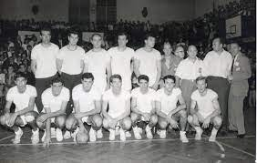
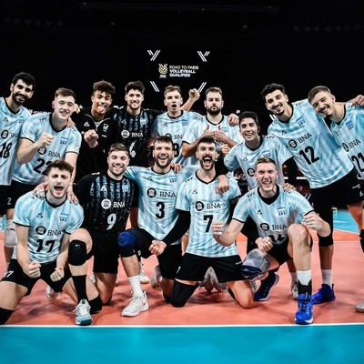

El origen del voleibol se remonta a 1895 cuando William G. Morgan, un instructor de educación física en Estados Unidos, quiso inventar una alternativa con menos fricción que el baloncesto, pero sin perder la competencia y la diversión.
Primera seleccion del voleybol masculino en la Argentina
El voley fue introducido en la Argentina en 1912, por la Asociación Cristiana de Jóvenes. Recién en 1932 se fundó la Federación Argentina de Vóleibol, que junto a la Federación de Pelota al Cesto compartió la dirección de ambos deportes bajo una misma organización.

Seleccion actual Argentina
En la actualidad, Argentina cuenta con 50.000 jugadores federados y es uno de los deportes más practicados en establecimientos educativos y lugares de veraneo.

Informacion de la cancha y posiciones
Cancha
El campo de juego es un rectángulo de dimensiones 18 m x 9 m, tanto para competiciones internacionales como nacionales, medidas desde el borde exterior de las líneas que delimitan el campo de juego. La red se sitúa a 2,10 metros de altura, tanto en categoría femenina como masculina.
Falta de posición.
Falta de rotación.
Faltas en el juego del balón.
Faltas del jugador en la red.
Faltas realizadas durante el servicio.
Faltas del golpe de ataque.
Faltas de bloqueo.
Cada Copa del Mundo tuvo su pelota oficial. Su fisonomía, diseño y materiales de fabricación han ido variando y evolucionando con el correr de los años.
Primera seleccion del voleybol femenino en Argentina
La participación de Argentina en competencias internacionales comenzó en el año 1951, cuando la Selección Argentina Femenina de Mayores participó en el primer Campeonato Sudamericano de la categoría, realizado en Río de Janeiro, Brasil.
Seleccion actual Argentina
En los últimos años, Argentina ha sido protagonista de las grandes ligas de clubes del extranjero, gracias a la participación en ellas de un número importante de jugadoras nacionales. En la actualidad casi cincuenta argentinas se desempeñan con éxito en Europa.